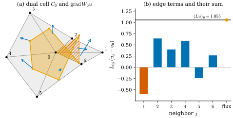
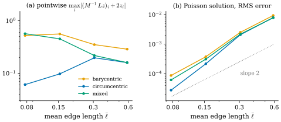

42.4 Discretization via DEC
Goals
- piecewise linear 함수의 gradient가 circumcentric dual cell의 boundary를 빠져나가는 flux가 정확히 \((Lu)_i\)임을 obtuse한 경우까지 증명할 수 있다.
- \(Lu\)가 dual cell 위에서 적분한 값이고 점마다의 근사는 \(M^{-1}Lu\)라는 것을 설명하고, 세 가지 dual area(barycentric, circumcentric, mixed Voronoi)가 넓이를 나누는 방식과 부호를 비교할 수 있다.
- 점마다의 Laplacian은 수렴하지 않아도 Poisson 문제의 해는 수렴하는 예를 계산으로 보일 수 있다.
- FEM과 DEC가 같은 \(L\)을 주는 이유를 Whitney form으로 설명하고, 행렬을 triplet으로 조립할 수 있다.
Prerequisites
- Theorem 42.3.5: stiffness matrix \(= -L\), Proposition 42.3.12: lumped mass \(=\) barycentric dual area
- Definition 36.5.6: circumcentric dual(부호 있는 길이와 넓이), Corollary 36.5.11: circumcentric dual cell의 넓이
- Proposition 36.6.1: DEC의 gradient와 divergence, Proposition 36.3.12: Whitney interpolation과 \(d\)의 교환
- Definition 38.6.2, Example 38.6.6: \(\Delta_h = \star_0^{-1}L\)과 \(\star_0\)의 선택
Motivation
Section 42.3은 Dirichlet energy를 정확히 계산해 \(L\)을 얻었다. 그 길에서 \(L\)은 2차식 \(-u^{\mathsf T}Lu = \int\abs{\grad W_0u}^2\)의 행렬이었다. 같은 행렬을 Chapter 36은 \(L = \tilde d_1\star_1d_0\)라는 세 단계의 합성으로 정의했다(Definition 36.6.6). 이 절은 그 합성을 Laplacian의 적분으로 읽는다. smooth 식 \(\Delta = \star d\star d\)에서 마지막 \(\star\)를 떼어 내면 \(d\star du = (\Delta u)\,dA\), 곧 Laplacian을 넓이 위에서 적분할 2-form이 남는다. 그것을 vertex의 dual cell 위에서 적분하고 Stokes's theorem을 쓰면 boundary 위의 flux가 된다. 이 관점에서 \(L\)은 “적분한 Laplacian”이고, 남겨 둔 \(\star_0^{-1}\)이 그것을 점마다의 값으로 바꾼다. 그런데 dual cell의 넓이를 정하는 방법은 하나가 아니다.
The Laplacian Integrated over a Dual Cell
vertex \(i\)의 dual cell을 \(C_i\)로 쓴다(Section 42.1의 Conventions 상자). 이 소절에서 \(C_i\)는 circumcentric dual cell이다(Definition 36.5.6). 그 boundary는 oriented 1-chain
\[ \partial C_i = \sum_{f = (i, j, k)\,\ni\, i}\big([m_{ij}, c_f] + [c_f, m_{ik}]\big) \]
이다(face \(f\)의 vertex를 \(i\)에서 시작하는 순환 순서로 썼다. \(m\)은 edge의 중점, \(c_f\)는 \(f\)의 circumcenter). interior vertex에서는 이웃한 face에서 오는 \([x_i, m_{ij}]\) 조각들이 서로 지워져 이 식이 된다. 각 조각은 그 face의 평면 안에 있고, edge에 수직이며, 부호 있는 길이 \(h_{f,e}\)를 갖는다(Lemma 36.5.9). smooth 함수 \(u\)가 평면 영역에 정의되어 있으면 divergence theorem(Proposition 35.4.12(b))으로 \(\int_{C_i}\Delta u\,dA = \oint_{\partial C_i}\inner{\grad u}{\mathbf{n}}\,ds\)이다. 이제 \(u\)를 piecewise linear 함수 \(W_0u\)로 바꾸면 오른쪽을 정확히 계산할 수 있다.
Proposition 42.4.1 (flux of a piecewise linear gradient out of a dual cell). triangle mesh(곡면 mesh여도, obtuse triangle이 있어도 된다)의 interior vertex \(i\)와 \(u \in \R^{n_0}\)에 대하여
이다. 여기서 왼쪽은 각 조각 \([m_{ij}, c_f]\)을 그 face의 평면 안에서 적분한 것이다(\(\star dW_0u\)는 face마다 상수인 1-form이고, 그 값은 조각을 따라 잰 \(\grad W_0u\)의 normal flux다).
Proof idea: 한 face 안에서 \(\grad W_0u\)는 상수이고, \(\partial C_i\)의 조각은 edge에 수직이다. 수직인 선분을 가로지르는 flux는 gradient의 edge 방향 성분에 선분의 길이를 곱한 것이고, 그 성분은 edge 위의 두 값의 차를 edge 길이로 나눈 것이다.
Proof. face \(f = (i, j, k)\)의 평면에 orthonormal frame을 잡고 \((i, j, k)\)가 반시계 방향이 되게 orient하자. \(J\)는 그 평면의 \(+90^\circ\) 회전, \(t = (\mathbf{x}_j - \mathbf{x}_i)/\abs{e_{ij}}\)이다. \(f\)는 \(i \to j\)의 왼쪽에 있으므로 \(c_f = m_{ij} + h_{f,e_{ij}}Jt\)이다(Lemma 36.5.9와 \(h\)의 부호 규약, \(h \lt 0\)이어도 같은 식이다). 상수 1-form의 선분 위 적분은 끝점의 차이를 넣은 값이므로((35.3.7)), 1-form의 \(\star\)에 대한 \((\star\alpha)(v) = -\alpha(Jv)\)(Proposition 38.3.6(b))를 쓰면
\[ \begin{aligned} \int_{[m_{ij}, c_f]}\star dW_0u &= (\star dW_0u)(h_{f,e_{ij}}Jt) = -h_{f,e_{ij}}\,dW_0u(JJt) \\ &= h_{f,e_{ij}}\,dW_0u(t) = h_{f,e_{ij}}\frac{u_j - u_i}{\abs{e_{ij}}} \end{aligned} \]
이다. 마지막 등호는 \(W_0u\)가 edge \(e_{ij}\) 위에서 \(u_i\)에서 \(u_j\)로 가는 linear 함수라는 것이다(Proposition 36.3.2). 같은 face의 다른 조각 \([c_f, m_{ik}]\)에서는 \(f\)가 \(i \to k\)의 오른쪽에 있으므로 \(c_f = m_{ik} - h_{f,e_{ik}}Jt'\)(\(t' = (\mathbf{x}_k - \mathbf{x}_i)/\abs{e_{ik}}\))이고, 같은 계산으로 \(\int_{[c_f, m_{ik}]}\star dW_0u = h_{f,e_{ik}}(u_k - u_i)/\abs{e_{ik}}\)이다. 모든 face에 대해 더하면, interior edge \(\{i, j\}\)는 그것을 포함하는 두 face에서 한 번씩 나오고 \(h_{f,e} + h_{g,e} = \abs{e^\star}\)이다((36.5.2)). 따라서 왼쪽은 \(\sum_j\tfrac{\abs{e_{ij}^\star}}{\abs{e_{ij}}}(u_j - u_i)\)이고, cotan formula(Theorem 36.5.10)와 Proposition 36.6.7로 \((Lu)_i\)이다. 곡면 mesh에서도 계산은 face마다 그 평면 안에서 했으므로 그대로다.
세 등호가 Chapter 36의 세 단계와 하나씩 대응한다 [Cr §6.3]. \(d_0\)는 edge를 따라 \(W_0u\)를 적분해 \(u_j - u_i\)를 주고(정확하다), \(\star_1\)은 그 circulation을 edge 길이로 나누고 dual edge 길이를 곱해 dual edge를 가로지르는 flux로 바꾸며(piecewise linear 함수에서는 정확하다. gradient가 face마다 상수이고 조각이 edge에 수직이기 때문이다), \(\tilde d_1 = -d_0^{\mathsf T}\)는 dual cell의 boundary를 따라 flux를 더한다(Stokes). 남은 \(\star_0^{-1}\)은 dual cell의 넓이로 나누는 일이고, Figure 36.6.1(a)의 고리가 이것이다.

Figure 42.4.1의 (a)에서 주황 boundary를 따라가 보자. 대부분의 조각은 vertex 0을 반시계 방향으로 감싸는 보통의 Voronoi 모양이다. edge \(01\)에서만 위아래 두 face의 circumcenter가 서로 반대편으로 넘어가 boundary가 접힌다. 그 접힌 부분은 orientation이 반대라 넓이와 flux에 음수로 들어가고, 그래서 \(L_{01}\)이 음수다. (b)의 첫 막대가 그것이다. 이렇게 꼬여도 Proposition 42.4.1의 증명은 부호 있는 길이 \(h\)만 썼으므로 그대로 성립한다. 주황 점이 검은 선 위에 정확히 있는 것이 그 확인이다.
Integrated versus Pointwise Values
\((Lu)_i\)는 \(\int_{C_i}\Delta u\,dA\)의 근사이므로 \(C_i\)의 넓이 \(A_i\)에 비례하는 양이다. 점마다의 값을 얻으려면 넓이로 나누어야 한다.
이것이 discrete Laplace–Beltrami operator \(\Delta_h = \star_0^{-1}L\)(Definition 38.6.2)이고, \(\star_0 = M\)은 Section 42.3의 lumped mass matrix와 같은 자리에 들어간다. Chapter 31이 \(Lu\)를 “적분한 양”, \(M^{-1}Lu\)를 “점마다의 양”이라 부른 구분(Definition 31.3.3 뒤)이 이것이다.
Example 42.4.2 (the height on the icosphere, integrated). icosphere(1)–(4)에서 \(\max_i\abs{(Lz)_i}\)는 \(0.573, 0.154, 0.044, 0.011\)로 level마다 약 \(\tfrac14\)이 된다. dual cell의 넓이(가장 큰 것이 \(0.287, 0.081, 0.023, 0.006\))와 함께 주는 것이다. circumcentric 넓이로 나눈 \((M^{-1}Lz)_i\)는 \(-2z_i\)와의 최대 차이가 \(0.000, 0.028, 0.015, 0.008\)로 \(0\)에 간다(Example 38.6.6(b)와 같은 값이다).
Verification: verify/v-42-4-dec.py
Non-example 42.4.3 (reading \(Lu\) as a pointwise value). \((Lu)_i\) 자체를 점마다의 Laplacian으로 쓰면 mesh를 세분할 때 모든 값이 \(0\)으로 간다(위 예). 그래서 \(Lu = f\)라는 식은 \(\Delta u = f\)의 이산화가 아니다. 넓이를 곱한 \(Lu = Mf\)가 맞다(Proposition 42.3.13). 같은 실수의 반대쪽이 explicit flow에서 \(\mathbf{x} \leftarrow \mathbf{x} + hL\mathbf{x}\)로 쓰는 것인데, 이것은 \(\partial_t\mathbf{x} = \Delta\mathbf{x}\)의 time step이 아니라 vertex마다 넓이만큼 다른 time step을 쓴 것이다(Section 42.6).
Choices of the Dual Area
\(L\)은 dual area의 선택과 무관하다. \(L\)에 들어가는 것은 dual edge의 길이뿐이기 때문이다. 점마다의 값은 \(A_i\)에 의존한다. 이 장에서 쓰는 세 가지는 다음과 같다.
- barycentric: \(A_i^{\mathrm{bary}} = \tfrac13\sum_{f\ni i}A_f\)(Remark 36.5.17(a)). FEM의 lumped mass matrix다(Proposition 42.3.12).
- circumcentric: \(A_i^{\mathrm{circ}} = \tfrac18\sum_{f\ni i}(\abs{e_{ij}}^2\cot\theta_k + \abs{e_{ik}}^2\cot\theta_j)\)(Corollary 36.5.11). \(L\)과 같은 circumcentric dual의 넓이이고, obtuse triangle 근처에서 조각이 음수가 될 수 있다.
- mixed Voronoi: 아래 정의.
Definition 42.4.4 (mixed Voronoi area). face \(f = (i, j, k)\)가 vertex \(i\)에 주는 넓이를, \(f\)에 obtuse한 각이 없으면 circumcentric 조각 \(\tfrac18(\abs{e_{ij}}^2\cot\theta_k + \abs{e_{ik}}^2\cot\theta_j)\)로, \(f\)에 obtuse한 각이 있으면 그 각이 \(i\)에 있을 때 \(A_f/2\), 아니면 \(A_f/4\)로 정하자. vertex \(i\)마다 이것을 \(f \ni i\)에 대해 더한
를 \(i\)의 mixed Voronoi area(혼합 보로노이 넓이)라 한다 [Meyer03]. dgmesh.mass_voronoi와 dgdec.dual_areas(V, F, "mixed")가 이것이다.
예: 모든 triangle이 acute이거나 right이면 mixed와 circumcentric이 같다(regular icosphere, grid_mesh). 비예: face 하나 \(\mathbf{x}_i = (0, 0)\), \(\mathbf{x}_j = (1, 0)\), \(\mathbf{x}_k = (0.5, 0.1)\)(\(\mathbf{x}_k\)의 각이 \(157^\circ\))에서 circumcentric 조각은 \(-0.1375, -0.1375, 0.325\)로 음수가 섞이지만(Non-example 38.5.7), mixed는 \(0.0125, 0.0125, 0.025\)로 모두 양수다.
Proposition 42.4.5 (dual areas partition the total area). 모든 triangle mesh에서 (a) 세 dual area 각각에 대해 \(\sum_iA_i = \sum_fA_f\)이다. (b) \(A_i^{\mathrm{bary}} \gt 0\)이고 \(A_i^{\mathrm{mix}} \gt 0\)이다. (c) \(A_i^{\mathrm{circ}}\)는 \(0\) 이하가 될 수 있다.
Proof. (a) face마다 세 vertex가 받는 몫의 합이 \(A_f\)임을 보이면 된다. barycentric은 \(3\cdot\tfrac{A_f}{3}\)이고, mixed의 obtuse face는 \(\tfrac{A_f}{2} + \tfrac{A_f}{4} + \tfrac{A_f}{4}\)이다. circumcentric(과 mixed의 non-obtuse face): 조각 \(\tfrac18\abs{e}^2\cot\theta\)는 edge \(e\)의 두 끝 vertex가 하나씩 받고, 두 조각을 합한 \(\tfrac14\abs{e}^2\cot\theta = \tfrac12\abs{e}\,h_{f,e}\)는 밑변 \(e\), 부호 있는 높이 \(h_{f,e}\)인 triangle \([\mathbf{x}_a, \mathbf{x}_b, c_f]\)의 부호 있는 넓이다((36.5.3)). 어떤 점 \(c\)에 대해서도 반시계 방향 triangle의 넓이는 \(c\)와 세 변이 만드는 세 triangle의 부호 있는 넓이의 합이므로(\(c\)가 밖에 있으면 하나가 음수가 되어 상쇄한다) 합이 \(A_f\)다. (b) barycentric은 정의에서 바로 나온다. mixed의 obtuse face 몫은 양수다. non-obtuse face에서는 모든 각이 \(\le 90^\circ\)이고 각의 합이 \(\pi\)이므로 각 vertex의 조각에 들어가는 두 cotangent는 \(0\) 이상이고 둘 다 \(0\)일 수는 없다(두 각이 모두 직각일 수 없다). 따라서 몫이 양수다. (c) 위의 비예에서 obtuse face 하나만 가진 vertex \(i\)의 circumcentric 넓이는 \(-0.1375\)다.
Example 42.4.6 (the alternating grid).
dgmesh.grid_mesh(간격 \(\ell\), 대각선이 정사각형마다 엇갈린다)에서 interior vertex는 valence가 4이거나 8이다. 모든 triangle이 직각이등변이므로 circumcentric과 mixed 넓이는 모든 interior vertex에서 \(\ell^2\)이지만, barycentric 넓이는 둘레 triangle의 수에 따라 \(\tfrac23\ell^2\)(valence 4)과 \(\tfrac43\ell^2\)(valence 8)이다. \(L\)은 어디서나 5점 stencil이고(Example 36.6.8(b)) \(u = x^2\)에서 \((Lu)_i = 2\ell^2\)이므로, \((M^{-1}Lu)_i\)는 circumcentric과 mixed에서 정확히 \(2 = \Delta u\)이고 barycentric에서는 \(3\)과 \(1.5\)가 번갈아 나온다. mesh를 세분해도 이 두 값은 그대로다. 그런데 같은 barycentric \(M\)으로 정사각형의 Poisson 문제(Figure 36.6.2의 문제)를 \(Lu = Mf\)로 풀면 최대 오차가 \(2.6\times10^{-2}, 6.5\times10^{-3}, 1.6\times10^{-3}\)(\(n = 8, 16, 32\))으로 2차 수렴한다. circumcentric의 약 두 배다.
Verification: verify/v-42-4-dec.py
이 예가 이 절의 핵심을 담고 있다. 점마다의 값 \(M^{-1}Lu\)는 vertex 하나의 dual area에 바로 의존하므로 그 넓이가 “틀리면” 수렴하지 않는다. 반면 \(Lu = Mf\)의 해는 오른쪽의 \(Mf\)를 통해서만 넓이에 의존하고, 그것은 \(\int f\varphi_i\)의 근사로서 이웃한 vertex들 사이에서 오차가 상쇄된다. 해의 수렴은 FEM의 이론(Remark 42.3.15)이 보장하는 것이고, 점마다의 수렴은 그 이론이 말하지 않는 것이다. Crane의 노트가 과제에서 barycentric dual area로 충분하며 수렴 차수에 영향을 주지 않는다고 적는 것은 Poisson 문제의 해에 대한 말로 읽어야 한다 [Cr §6.5](Coding 18).
Example 42.4.7 (three dual areas on a jittered sphere).
ch42.jittered_sphere(level, s=0.15, seed=42)(level 1–4, obtuse triangle 4, 52, 168, 690개)에서 \(\Delta z = -2z\)를 두 방법으로 잰다. 점마다의 최대 오차 \(\max_i\abs{(M^{-1}Lz)_i + 2z_i}\)는 barycentric \(0.287, 0.351, 0.559, 0.523\), mixed \(0.159, 0.218, 0.451, 0.566\)으로 줄지 않고, circumcentric만 \(0.159, 0.197, 0.098, 0.061\)로 준다. Poisson 문제 \(Lu = M(-2z)\)의 해의 RMS 오차는 세 넓이 모두 \(8\times10^{-3}\) 근처에서 \(3\times10^{-5}\)–\(9\times10^{-5}\)로 edge 길이의 제곱보다 빨리 준다(Figure 42.4.2).
Verification: verify/v-42-4-dec.py

ch42.jittered_sphere, \(s = 0.15\), seed 42, level 1–4)에서 세 dual area로 만든 \(M = \diag(A_i)\)를 쓴 (a) 점마다의 오차 \(\max_i\abs{(M^{-1}Lz)_i + 2z_i}\)와 (b) \(Lu = M(-2z)\)의 해의 넓이 가중 RMS 오차. 읽는 법: 주황은 barycentric, 파랑은 circumcentric, 초록은 mixed Voronoi이고, 가로축은 평균 edge 길이(log), 세로축은 오차(log)다. (b)의 회색 점선은 기울기 2다. 볼 것: (a)에서 왼쪽(촘촘한 mesh)으로 갈수록 주황과 초록 선은 내려가지 않고 \(0.52\), \(0.57\)까지 오른다. vertex를 흔드는 크기가 edge 길이에 비례하므로 mesh가 촘촘해져도 불규칙함이 그대로이기 때문이다. circumcentric만 \(0.061\)까지 내려간다. (b)에서는 세 선이 함께 내려가 level 4에서 \(8.7\times10^{-5}\), \(2.8\times10^{-5}\), \(6.2\times10^{-5}\)이다. 본문과의 연결: (42.4.2), Example 42.4.6, Example 42.4.7. level 3 mesh에서 mixed 넓이로 잰 점마다의 오차를 색으로 칠한 interactive version이 있다.Figure 42.4.2의 두 패널은 같은 mesh, 같은 \(L\), 같은 \(M\)을 쓴다. 다른 것은 질문뿐이다. (a)는 “각 vertex에서 \(\Delta z\)를 맞혔는가”를 묻고, (b)는 “\(\Delta u = -2z\)를 풀었을 때 \(z\)가 나오는가”를 묻는다. (a)에서 barycentric과 mixed가 실패하는 vertex는 obtuse triangle에 붙은 vertex들이다(interactive 그림에서 밝은 vertex). circumcentric이 (a)에서도 잘 맞는 것은 이 mesh의 vertex가 모두 sphere 위에 있기 때문이다. 그때 \((L\mathbf{x})_i\)의 반지름 방향 성분은 circumcentric 넓이로 나누면 정확히 \(-2\)다(Example 31.3.6). 일반적인 곡면에서 circumcentric 넓이가 점마다 수렴한다는 보장은 아니고, 넓이가 음수가 되는 vertex에서는 쓸 수조차 없다. 그래서 실무에서는 양수가 보장되는 mixed나 barycentric을 쓰고, 점마다의 값이 아니라 linear system의 해를 결과로 삼는 경우가 많다.
Why FEM and DEC Agree
Theorem 42.3.5는 성분을 비교해 FEM과 DEC가 같은 \(L\)을 준다는 것을 보였다. 이유를 Whitney form으로 말할 수 있다. Chapter 36의 diagonal \(\star_1\) 대신 Whitney 1-form의 L2 inner product로 만든 Galerkin Hodge star \(M_1\), \((M_1)_{ee'} = \int\inner{\varphi_e}{\varphi_{e'}}\,dA\)(Remark 36.5.17(b))를 써 보자.
Proposition 42.4.8 (the two Hodge stars agree on exact 1-forms). 모든 triangle mesh에서
이다. 곧 \(M_1\)(대각이 아니다)과 \(\star_1\)(대각이다)은 다른 행렬이지만, \(\im d_0\)의 원소끼리의 inner product는 같게 준다.
Proof. Proposition 36.3.12에서 \(W_1(d_0u) = d(W_0u)\)이므로 \((d_0u)^{\mathsf T}M_1(d_0v)\) \(= \int\inner{W_1d_0u}{W_1d_0v}\,dA\) \(= \int\inner{dW_0u}{dW_0v}\,dA\) \(= \sum_{i,j}u_iv_ja_{ij}\)이다. Theorem 42.3.5에서 \((a_{ij}) = -L = d_0^{\mathsf T}\star_1d_0\)이고, 모든 \(u, v\)에서 성립하므로 행렬이 같다.
그러므로 FEM과 DEC는 “mesh 위의 1-form의 크기를 어떻게 재는가”에서 다른 답(\(M_1\)과 \(\star_1\))을 고르지만, Laplacian에 필요한 것은 exact 1-form \(d_0u\)의 크기뿐이고 거기서는 두 답이 일치한다. 두 star가 일치하는 범위가 정확히 Laplacian이 쓰는 범위라는 것이 Chapter 36의 질문(Chapter 36의 Leads to)에 대한 답이다. exact가 아닌 1-form, 예를 들어 Chapter 45의 Hodge decomposition의 harmonic 성분에서는 두 선택이 다른 결과를 줄 수 있다. icosphere(2)에서 \(M_1\)은 대각 밖의 성분이 최대 \(0.091\)이지만 \(d_0^{\mathsf T}M_1d_0\)와 \(-L\)의 차는 \(4\times10^{-15}\)이다(verify).
Building the Matrices
알고리즘으로 정리하자 [Cr §6.4]. vertex에 \(0, \dots, n_0 - 1\)의 번호를 주고, 결과 행렬 \(L\)의 \(i\)번째 행이 vertex \(i\)의 식이 되게 한다. 그다음 face마다(또는 halfedge마다) 지역적인 기여를 (행, 열, 값)의 triplet으로 만들고, 같은 자리의 값을 모두 더한다. 이 순서가 cotan formula를 vertex마다 이웃을 돌며 더하는 것과 같은 일을 하지만, 이웃 목록 없이 face 배열만으로 된다. 각 corner \(c\)의 각 \(\theta_c\)는 그 맞은편 edge \(\{a, b\}\)에 \(\tfrac12\cot\theta_c\)를 준다. 곧 \((a, b)\)와 \((b, a)\)에 \(+\tfrac12\cot\theta_c\), \((a, a)\)와 \((b, b)\)에 \(-\tfrac12\cot\theta_c\)다. dual area도 corner마다의 몫을 vertex에 더하는 같은 방식이다.
| FEM (Section 42.3) | DEC (this section) | |
|---|---|---|
| 출발점 | weak form, piecewise linear 함수의 Dirichlet energy | \(\int_{C_i}\Delta u = \oint_{\partial C_i}\star du\), \(\Delta = \star d\star d\) |
| \(L\) | stiffness matrix \(= -L\) | \(\tilde d_1\star_1d_0 = L\) |
| \((Lu)_i\)의 뜻 | \(-\int\inner{\grad W_0u}{\grad\varphi_i}\,dA\) | dual cell \(C_i\)를 빠져나가는 flux |
| 넓이 \(M\) | Galerkin \(M^{\mathrm{G}}\), 또는 lumped \(=\) barycentric | \(\star_0\): barycentric, circumcentric, mixed |
| 정확한 것 | \(V_h\) 안에서의 energy, \(-L \ge 0\) | dual cell 위의 Stokes, 상수 form에서의 \(\star\) |
| 보장 | 해와 energy의 수렴 | 점마다의 값은 \(\star_0\)의 선택에 달려 있다 |
Summary
- piecewise linear 함수의 gradient가 circumcentric dual cell을 빠져나가는 flux는 정확히 \((Lu)_i\)이고, obtuse triangle이 있어도 부호 있는 길이로 그대로 성립한다. \(d_0\), \(\star_1\), \(\tilde d_1\)이 그 계산의 세 단계다(Proposition 42.4.1).
- \(Lu\)는 적분한 값이고 점마다의 Laplacian은 \(M^{-1}Lu\)다. \(Lu = f\)가 아니라 \(Lu = Mf\)가 Poisson equation의 이산화다((42.4.2), Non-example 42.4.3).
- dual area는 barycentric, circumcentric, mixed Voronoi가 있다. 모두 넓이를 나누고, barycentric과 mixed는 양수이며 circumcentric은 음수일 수 있다(Definition 42.4.4, Proposition 42.4.5).
- 점마다의 \(M^{-1}Lu\)는 넓이의 선택에 따라 수렴하지 않을 수 있지만(grid의 \(3\)과 \(1.5\), jittered sphere), Poisson 문제의 해는 세 넓이 모두에서 수렴한다(Example 42.4.6, Example 42.4.7).
- Whitney 1-form의 Galerkin Hodge star \(M_1\)과 diagonal \(\star_1\)은 exact 1-form에서 같은 inner product를 주므로 FEM과 DEC의 \(L\)이 같다(Proposition 42.4.8).
다음 절에서는 boundary가 있는 mesh로 간다. boundary vertex의 dual cell은 잘려 있고, 그 boundary의 일부는 dual edge가 아니라 mesh의 boundary다. 그 부분을 지나는 flux를 무엇으로 정하는지가 Neumann boundary condition이고, boundary 값을 정하는 것이 Dirichlet boundary condition이다.
Exercises
Exercise 42.4.1 ★ triangle 하나 \(\mathbf{x}_0 = (0, 0)\), \(\mathbf{x}_1 = (1, 0)\), \(\mathbf{x}_2 = (0, 1)\)에서 세 vertex의 barycentric, circumcentric, mixed 넓이를 구하여라.
Solution
넓이는 \(\tfrac12\)이므로 barycentric은 셋 모두 \(\tfrac16\)이다. circumcenter는 빗변의 중점 \((\tfrac12, \tfrac12)\)이다. 각은 \(\theta_0 = 90^\circ\), \(\theta_1 = \theta_2 = 45^\circ\)이므로 (36.5.5)에서 \(A_0^{\mathrm{circ}} = \tfrac18(\abs{e_{01}}^2\cot\theta_2 + \abs{e_{02}}^2\cot\theta_1)\) \(= \tfrac18(1 + 1) = \tfrac14\), \(A_1^{\mathrm{circ}} = \tfrac18(\abs{e_{01}}^2\cot\theta_2 + \abs{e_{12}}^2\cot\theta_0)\) \(= \tfrac18(1 + 0) = \tfrac18\), 같은 방법으로 \(A_2^{\mathrm{circ}} = \tfrac18\)이다. 합은 \(\tfrac12\)이다. obtuse한 각이 없으므로(직각은 obtuse가 아니다) mixed는 circumcentric과 같다.
Verification: verify/v-42-4-dec.py
Exercise 42.4.2 ★ triangle \(\mathbf{x}_0 = (-1, 0)\), \(\mathbf{x}_1 = (1, 0)\), \(\mathbf{x}_2 = (0, 0.3)\)에서 세 dual area를 구하여라. circumcentric 넓이 가운데 음수인 것은 어느 vertex인가?
Solution
넓이는 \(0.3\)이다. \(\mathbf{x}_2\)의 각은 \(\cos\theta_2 = (0.09 - 1)/1.09\)에서 \(\theta_2 = 146.6^\circ\)로 obtuse이고, \(\cot\theta_2 = (0.09 - 1)/0.6 = -1.5167\)(Lemma 36.5.9의 공식, \(a = 1\)), \(\theta_0 = \theta_1 = 16.7^\circ\)이고 \(\cot\theta_0 = \cot\theta_1 = 1/0.3 = 3.333\)이다. circumcentric: \(A_0 = \tfrac18(\abs{e_{01}}^2\cot\theta_2 + \abs{e_{02}}^2\cot\theta_1)\) \(= \tfrac18(4(-1.5167) + 1.09\cdot3.333)\) \(= \tfrac18(-6.067 + 3.633) = -0.304\), 대칭으로 \(A_1 = -0.304\), \(A_2 = \tfrac18(1.09\cdot3.333 + 1.09\cdot3.333) = 0.908\)이다. 합은 \(0.3\)이다. 음수는 obtuse 각의 맞은편 edge의 두 끝 \(\mathbf{x}_0, \mathbf{x}_1\)이다. mixed는 \(A_2 = 0.15\), \(A_0 = A_1 = 0.075\), barycentric은 모두 \(0.1\)이다.
Verification: verify/v-42-4-dec.py
Exercise 42.4.3 ★ 닫힌 mesh에서 \(\sum_i(Lu)_i = 0\)임을 행렬로 보이고, Proposition 42.4.1로 그 뜻을 말하여라. smooth의 어느 사실에 대응하는가?
Solution
\(L\)은 symmetric이고 \(L\mathbf{1} = 0\)이므로 \(\mathbf{1}^{\mathsf T}Lu = (L\mathbf{1})^{\mathsf T}u = 0\)이다. Proposition 42.4.1에서 \((Lu)_i\)는 \(C_i\)를 빠져나가는 flux이고, 닫힌 mesh에서 이웃한 두 dual cell은 공유하는 dual edge 조각을 반대 방향으로 지나므로 한 cell에서 나간 flux는 이웃 cell에 들어온다. 그래서 모두 더하면 \(0\)이다. smooth에서는 \(\int_S\Delta u\,dA = 0\)(Corollary 42.1.13(b)), 곧 닫힌 곡면에는 flux가 빠져나갈 곳이 없다는 것이다.
Exercise 42.4.4 ★★ 직각삼각형 face(직각은 obtuse가 아니므로 mixed Voronoi area는 circumcentric 조각을 쓴다)에서 세 corner의 몫이 직각인 corner에서 \(A_f/2\), 나머지 두 corner에서 \(A_f/4\)씩임을 보여라. 이것이 obtuse face의 규칙 \((A_f/2, A_f/4, A_f/4)\)와 같다는 것은 무엇을 뜻하는가?
Solution
직각 corner를 \(k\), 두 다리의 길이를 \(p = \abs{e_{ki}}\), \(q = \abs{e_{kj}}\)라 하면 \(A_f = \tfrac12pq\)이고, \(\theta_j\)의 맞은편 변이 \(e_{ki}\)이므로 \(\cot\theta_j = q/p\), 같은 이유로 \(\cot\theta_i = p/q\), \(\cot\theta_k = 0\)이다. (36.5.5)의 조각으로 corner \(k\)의 몫은 \(\tfrac18(p^2\cot\theta_j + q^2\cot\theta_i) = \tfrac18(pq + pq) = \tfrac{A_f}{2}\)이다. corner \(i\)의 몫은 다리 \(e_{ki}\)의 조각 \(\tfrac18p^2\cot\theta_j = \tfrac{pq}{8} = \tfrac{A_f}{4}\)와 빗변의 조각 \(\tfrac18\abs{e_{ij}}^2\cot\theta_k = 0\)의 합이므로 \(\tfrac{A_f}{4}\)이고, corner \(j\)도 같다. 이등변이 아니어도 그렇다. 따라서 한 각을 \(90^\circ\)보다 조금 작은 값에서 조금 큰 값으로 바꿀 때 mixed Voronoi area의 몫은 연속적으로 바뀐다. \(90^\circ\)에서 Voronoi 몫과 obtuse 규칙이 정확히 같기 때문이다.
Verification: verify/v-42-4-dec.py
Exercise 42.4.5 ★★
Coding. jittered sphere(ch42.jittered_sphere(level, s=0.15, seed=42), level 1–4)에서 세 dual area로 vertex의 mean curvature \(H_i\)(dgdec.mean_curvature(V, F, kind), 바깥쪽 normal에서 정확한 값 \(-1\))와 \(K_i = \delta_i/A_i\)(\(\delta_i\)는 angle defect, Section 31.2, 정확한 값 \(1\))의 최대 오차를 구하여라. 어느 넓이가 점마다 수렴하는가?
Solution
import numpy as np
import dgmesh as dm
import dgdec as dd
import ch42
for level in range(1, 5):
V, F = ch42.jittered_sphere(level, s=0.15, seed=42)
defect = dm.angle_defect(V, F)
row = []
for kind in ("barycentric", "circumcentric", "mixed"):
H = dd.mean_curvature(V, F, kind) # outward normal: exact H = -1
K = defect / dd.dual_areas(V, F, kind) # exact K = 1
row.append(f"{kind[:4]} H {np.abs(H + 1).max():.3f} K {np.abs(K - 1).max():.3f}")
print(level, " | ".join(row))1 bary H 0.199 K 0.287 | circ H 0.006 K 0.101 | mixe H 0.053 K 0.131
2 bary H 0.297 K 0.327 | circ H 0.027 K 0.033 | mixe H 0.179 K 0.226
3 bary H 0.433 K 0.440 | circ H 0.003 K 0.008 | mixe H 0.349 K 0.356
4 bary H 0.362 K 0.367 | circ H 0.002 K 0.003 | mixe H 0.423 K 0.426circumcentric 넓이에서만 두 curvature의 점마다 오차가 \(0\)으로 간다(level 4에서 \(0.002\), \(0.003\)). barycentric과 mixed는 level 3–4에서도 오차가 \(0.35\)–\(0.44\)로 줄지 않는다. 이것은 Example 42.4.7의 \(\Delta_hz\)와 같은 현상이고, 이유도 같다. vertex가 sphere 위에 있으면 circumcentric 넓이가 \((L\mathbf{x})_i\)의 반지름 성분과 정확히 맞물린다(Example 31.3.6). \(K_i\)에도 같은 종류의 맞물림이 있다. vertex가 모두 unit sphere 위에 있으면 \(C_i\)의 radial projection(원점에서 sphere로 보내는 것)의 넓이가 정확히 \(\delta_i\)다. face의 circumcenter는 원점에서 face 평면에 내린 수선의 발이므로, 그 projection은 face normal들을 vertex로 하는 spherical polygon이 된다(verify에서 \(10^{-13}\) 안에서 확인했다). 그래서 \(K_i - 1\)은 \(C_i\)와 그 projection의 넓이 차이에서만 온다. 일반 곡면에서 circumcentric이 언제나 이긴다는 뜻은 아니다. 이 mesh에서는 circumcentric 넓이가 모두 양수였다(최솟값은 level 4에서 \(0.0023\)). angle defect와 \(K_i\)의 Track 2 정의는 Chapter 40이 맡는다(Definition 40.1.1, Definition 40.1.12).
Verification: verify/v-42-4-dec.py가 이 코드를 그대로 실행하고 출력을 비교한다.